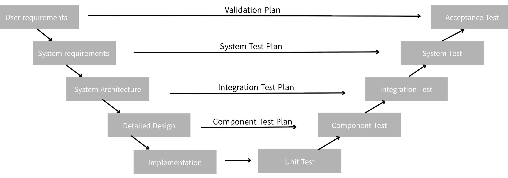

6. V-model for Project Design#
TPGM에서 surgical robot을 연구하신 노민승 강사님의 프로젝트 설계 강의를 정리하였다.
오늘 배운 내용
경력자에게 기대하는 역량
V-model은 개발(설계)과 검증(Test)의 대응 구조
v-model이란, 개발 단계와 테스트 단계를 1:1로 대응시키는 소프트웨어 개발 모델이다. 아래 그림의 왼쪽으로 내려가는 것은 설계(Define)이고 오른쪽에서 올라가는 것은 검증(Test)이다.

6.1. 개발/설계 단계#
v-model의 왼쪽에서 흐름은 다음과 같다. 즉, 점점 구체화되는 방향이다. (abstract -> concrete)
6.1.1. User requirements (사용자 요구사항)#
산출물
요구사항 명세서 (SRS)
유즈 케이스 (Use Case)
시나리오 문서
고려사항
사용자 입장에서 문제 정의했는가?
기능 요구 vs. 비기능요구 (성능, 안정성 등) 구분했는가?
테스트 가능하게 작성했는가? (모호하면 안됨)
핵심 포인트
“사람 입장에서” + “측정 가능하게”
예시
스마트 팩토리 물류센터 기준
목표:
- 물류 입고부터 적재까지 자동화
사용자:
- 물류 관리자
- 현장 작업자
기능 요구:
- 박스를 자동으로 인식해야 한다
- AMR이 지정된 위치로 이동해야 한다
- 로봇팔이 박스를 pick & place 해야 한다
비기능 요구:
- 처리 시간: 박스 1개당 10초 이내
- 정확도: 95% 이상
- 24시간 무인 운영 가능
시나리오:
1. 박스 도착 → 카메라 인식
2. AMR 호출
3. 로봇팔 pick
4. 지정 위치에 place
6.1.2. System Requirements (시스템 요구사항)#
산출물
시스템 요구사항 정의서
기능 리스트 (feature list)
인터페이스 정의 (I/O spec)
고려사항
요구사항을 시스템 관점으로 변환했는가?
HW/SW 역할 분리했는가?
measurable 한가? (ex) latency < 100ms)
핵심
요구사항 -> “시스템 기능”으로 변환
예시
입력:
- 카메라 이미지 (RGB)
- 사용자 작업 명령
출력:
- 로봇팔 제어 명령 (좌표)
- AMR 이동 명령
기능 분해:
- Vision Module: 물체 인식
- AMR Module: 위치 이동
- Robot Arm Module: pick & place
- Control Module: 작업 orchestration
성능 요구:
- inference latency < 200ms
- AMR 위치 오차 < 5cm
6.1.3. System Architecture (시스템 구조)#
산출물
시스템 아키텍처 다이어그램
모듈 구조도
데이터 흐름도 (Data Flow)
고려사항
주고 받는 데이터의 구조가 명확한가?
모듈 간 책임 분리가 명확한가?
확장성 / 유지보수 고려했는가?
병목 (bottleneck) 발생 가능성
핵심
누가 무엇을 담당하는지 명확히
참고
GUI를 설계하면 시나리오를 디테일하게 구성할 수 있다.
예시
구성:
- Vision Node (YOLO)
- AMR Navigation Node (Nav2)
- Robot Arm Controller Node
- Task Manager Node (LLM or rule-based)
통신:
- ROS2 Topic: /image, /cmd_vel, /arm_cmd
- ROS2 Action: navigation task
데이터 흐름:
Camera → Vision → Task Manager → AMR / Robot Arm
6.1.4. Detailed Design (상세 설계)#
산출물
API 명세서
ROS2 node / topic / action 정의
클래스 다이어그램
상태 다이어그램
고려사항
실제 구현 가능한 수준까지 내려왔는가?
인터페이스 충돌 없는가?
edge case 고려했는가?
핵심
바로 코드를 짤 수 있는 수준
예시
ROS2 Node 정의:
Vision Node:
- input: /camera/image
- output: /detected_object
Task Manager Node:
- input: /detected_object
- output: /arm_cmd, /amr_goal
Robot Arm Node:
- input: /arm_cmd
- action: pick/place
AMR Node:
- input: /amr_goal
- action: navigation
API:
- move_to(x, y)
- pick(object_id)
- place(location)
6.1.5. Implementation (구현)#
산출물
코드 (SW)
하드웨어 구성 (HW)
실행 스크립트 / 환경설정
고려사항
코딩 규칙/협업 규칙
테스트 코드 포함 여부
재현 가능성 (reproducibility)
예시
코드:
- vision.py (YOLO inference)
- nav.py (AMR control)
- arm.py (robot control)
- task_manager.py
환경:
- ROS2 Humble
- Python 3.10
실행:
- ros2 launch system.launch.py
6.2. 테스트 단계#
6.2.1. Unit Test (단위 테스트)#
산출물
테스트 코드 (pytest 등)
테스트 결과 리포트
고려사항
“정적 분석 툴”을 사용하여 개발한다. coding standard 규칙으로 연동해 개발한다.
정적 분석 (Static Analysis): 코드를 실행하지 않고 구조, 코딩 규칙, 보안 취약점을 검사(예: SonarQube, PMD)
목적: 표준 준수(MISRA C 등), 코드 품질 향상, 보안 강화를 위해 사용
주요 툴: SonarQube, PMD, ESLint, Coverity
unit test: 어플리케이션의 가장 작은 단위(함수, 메소드 등)를 고립(Isolation)시켜 기능이 정확히 동작하는지 검증
목적: 기능 작동 여부 검증, 코드 변경 시 사이드 이펙트 방지, 리팩토링 안정성 확보.
주요 툴: JUnit (Java), PyTest (Python), NUnit (.NET)
각 함수/모듈이 정상 작동하는가?
edge case 테스트 했는가?
예:
로봇팔 pick 함수 단독 테스트
예시
테스트 대상:
- vision.detect()
- arm.pick()
테스트 케이스:
- 정상 입력 → 정상 출력
- 없는 object → None 반환
6.2.2. Component Test#
산출물
모듈 단위 테스트 결과
mock 환경 테스트 결과
고려사항
한 컴포넌트 내부 동작 정상인가?
외부 의존성 없이 테스트 가능한가?
예시
Vision Module 테스트:
- 이미지 입력 → bounding box 출력 확인
Robot Arm 테스트:
- 단일 pick 동작 성공 여부
6.2.3. Integration Test(연동 테스트)#
산출물
시스템 연동 테스트 리포트
인터페이스 검증 결과
고려사항
모듈 간 연결 잘 되는가?
데이터 흐름 정상인가?
예)
AMR -> 로봇팔 task 전달
예시
시나리오:
- Vision → Task Manager → Robot Arm 연결
검증:
- detection 결과가 arm command로 전달되는가?
- AMR 이동 후 arm 실행되는가?
6.2.4. System Test(시스템 테스트)#
산출물
전체 시나리오 테스트 결과
성능 테스트 결과
고려사항
전체 시스템이 요구사항대로 동작하는가?
latency / 안정성 만족하는가?
여기까지 개발팀. 기능/비기능 테스트가 잘 나오는지 테스트
예시
전체 시나리오:
1. 박스 감지
2. AMR 이동
3. 로봇팔 pick
4. 지정 위치 place
평가:
- 성공률: 90% 이상
- 처리 시간: 평균 12초
6.2.5. Acceptance Test (인수 테스트)#
산출물
고객 검증 결과
최종 승인 문서
고려 사항
실제 사용자 요구 충족하는가?
현장 적용 가능한가?
사용자의 마음에 들어야 함.
예시
검증 항목:
- 실제 물류 흐름에서 동작하는가?
- 작업자 개입 없이 수행 가능한가?
결과:
- OK / Fail
- 개선 필요 사항
Summary
왼쪽에서 “설계하면서” 오른쪽 테스트를 미리 정의해야함. 예를 들어, 요구사항을 쓸 때 이걸 어떻게 테스트하지를 동시에 고려해야함.
각 단계는 반드시 산출물을 가지며, 해당 산출물이 다음 단계와 테스트의 기준이 된다.
V-model은 단순히 개발 후 테스트하는 것이 아니라, 설계 단계에서부터 테스트를 함께 정의하여 각 단계별 검증을 가능하게 하는 개발 방식이다. 이를 통해 시스템의 안정성과 품질을 높일 수 있다.
6.3. 마지막으로#
경력자에게 기대하는 것이 뭘까? 첫번재로 실무이고 경험이 비슷하면, 회사 다닌 경험을 본다. 그렇다면, 개발에서는 실무란 무엇인가? 일단 대회/학교/프로젝트에서 완성도와 차이가 크다. 보통, 대학원에서 완성도는 20~30%정도. 가능성만 확인하는 단계이다. 돈받고 팔 수 있어야하며, 사고/문제가 있으면 안되고, 알려진 버그들 및 작은 버그들은 관리가 되어 있어야 한다. 분야에 따라 90~95% 로 완성도가 높아야 한다. 경력자에게는 제품 출시해봤는지 물어보는데, “출시”를 거치려면 애낳는 고통을 겪어야 하기 때문이다. 인증받고 테스트하려면 엄청난 경험을 해야한다.